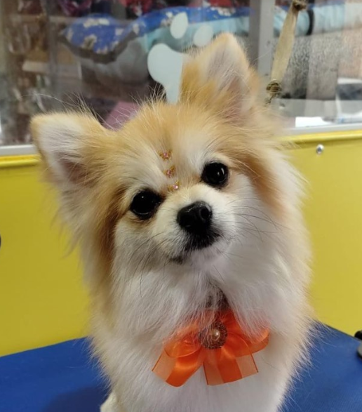
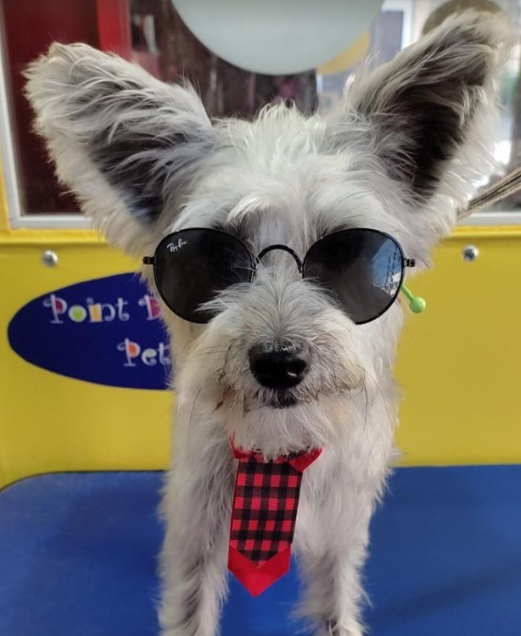
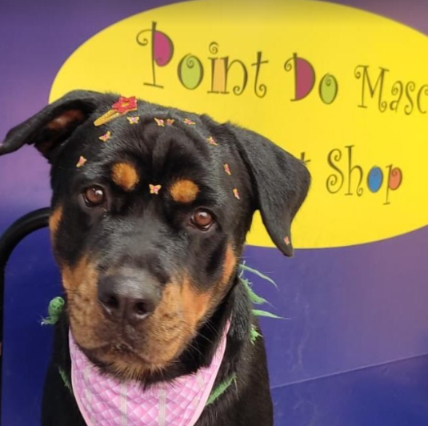
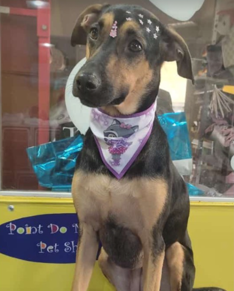

01
Banho e tosa
Um cuidado especial para seu pet sair limpo, cheiroso e cheio de estilo.
Quero agendar →PET SHOP EM SANTOS ✦
Banho e tosa com atenção de verdade, produtos essenciais e uma loja que recebe cada patinha como parte da família.


SOBRE O POINT DO MASCOTE
No Point do Mascote, cuidar vai muito além do básico. A gente combina atenção, produtos e um atendimento próximo para deixar a rotina do seu pet mais leve.
COMO PODEMOS AJUDAR
01
Um cuidado especial para seu pet sair limpo, cheiroso e cheio de estilo.
Quero agendar →02
Conte com a loja para encontrar os itens que fazem parte do cuidado diário.
Consultar no WhatsApp →03
Produtos para alimentação, rotina, diversão e bem-estar do seu companheiro.
Ver novidades →DO NOSSO INSTAGRAM
Acompanhe os momentos, as novidades e os cuidados que fazem parte do nosso dia a dia.
@pointdomascote ↗

VEM CONHECER
HORÁRIOS
Em caso de dúvida, chama a gente no WhatsApp.
VAMOS CUIDAR JUNTOS?